Para poder realizar este taller ud debe haber leído los conceptos básicos sobre angular en el libro del curso. Tener claro:
En este ejemplo vamos a crear una aplicación Angular con un componente para crear un elemento de alguno de los recursos de su aplicación.
El resultado del tutorial es una aplicación que tiene un formulario básico.
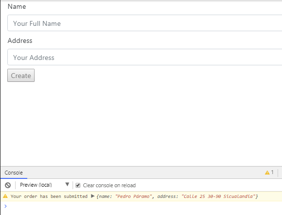
Ingrese, con su cuenta de github, a https://stackblitz.com y cree un nuevo proyecto Angular.
La librería que vamos a utilizar para manejar los formularios se llama ReactiveFormsModule y se debe incluir así:
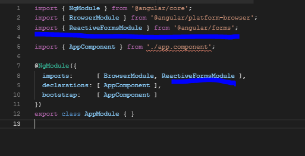
Sobre la carpeta app de su proyecto seleccione la opción de Angular Generator (angular-cli) y allí Módulo:
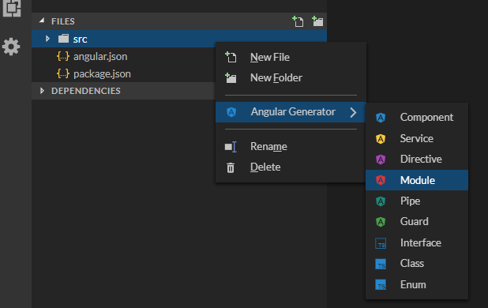
Defina el nombre de su módulo. Por ejemplo xyz si su recurso es el recurso Xyz.
Vaya al archivo app.module.ts y agregue el nuevo módulo. Debe hacer dos cosas: 1) Importar utilizando el nombre de la clase del nuevo módulo y asociarlo con el archivo físico. Asegúrese de escribir correctamente la ruta del archivo físico. 2) Incluir en el atributo imports del decorador del módulo, el nombre del módulo nuevo.
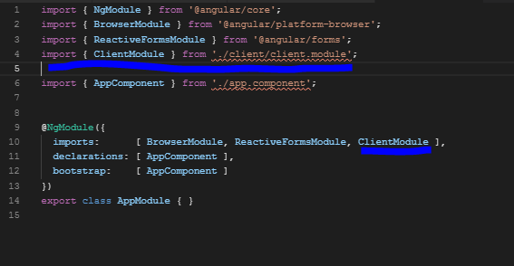
Vaya a la carpeta del módulo xyz (client), click derecho Angular Generator/Componente
Dele el nombre xyz-create (client-create). Verifique que se crearon tres archivos dentro de una carpeta nueva xyz-create dentro de la carpeta del módulo xyz.
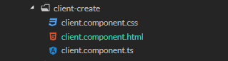
Angular-cli crea la declaración del componente en el módulo. Sin embargo, se debe agregar una línea con el atributo exports para que este componente se pueda ver desde la aplicación principal .
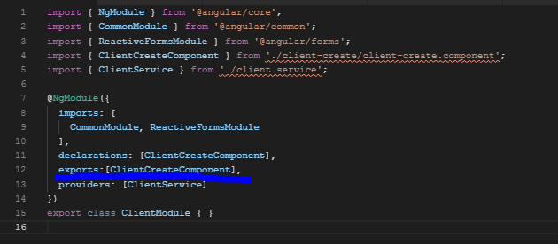
Abra el archivo de la vista del componente de listar "client-create.component.html. Allí se encuentra lo que queremos que se despliegue en la página principal.
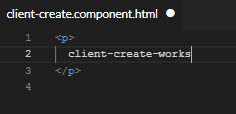
Para lograrlo:
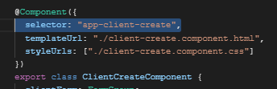
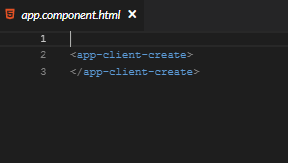
Angular cuenta con librerías para manejar los formularios. Estas librerías permiten crear objetos que contienen los campos en el formulario y que serán desplegados en la vista. La librería se encarga de mantener la relación entre los campos de entrada (input) que despliega la vista y los datos en el componente. Estas librerías debemos importarlas en el componente de crear el recurso.
import { Component } from "@angular/core";
import { FormBuilder, FormGroup, Validators } from "@angular/forms";En nuestro ejemplo, vamos a implementar un formulario para crear un nuevo cliente. Este cliente tiene un atributo name y un atributo address.
Un objeto formulario es de tipo FormGroup y contiene un conjunto de objetos FormControl que cada uno representa un campo del formulario donde el usuario ingresará valores.
En el siguiente código del componente vamos a declarar una variable clientForm de tipo FormGroup.
@Component({
selector: "app-client-create",
templateUrl: "./client-create.component.html",
styleUrls: ["./client-create.component.css"]
})
export class ClientCreateComponent {
clientForm: FormGroup;Vamos a inicializar la forma clientForm con los elementos que la componen. Estro lo hacemos en el constructor del componente. Por cada campo de entrada, definimos un nombre y sus propiedades de validación si es que las tiene:
constructor(
private clientService: ClientService,
private formBuilder: FormBuilder
) {
this.clientForm = this.formBuilder.group({
name: ["", [Validators.required, Validators.minLength(2)]],
address: ["", Validators.required]
});
}
}Estamos definiendo dos campos, FormControl. El primero tiene se llama "name", su valor inicial es vacío y tiene dos validaciones: la primera dice que el campo es obligatorio y la segunda dice que el valor debe tener una longitud mínima de 2 caracteres. El segundo campo se llama "address" , su valor inicial es vacío y tiene una validación que indica que el campo es obligatorio
La vista del componente, es decir el código html, va en el archivo "client-create.component.html".
El formulario que vamos a construir es el siguiente:
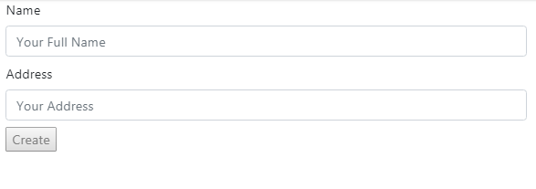
Este formulario es un elemento form que contiene los dos inputs con sus respectivos label y el botón de submit para crear el cliente:
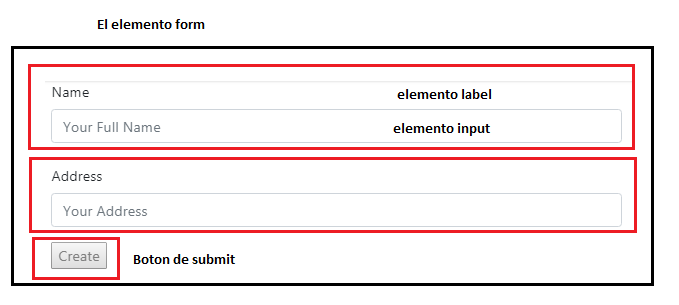
El html correspondiente es el siguiente:
<form [formGroup]="clientForm" (ngSubmit)="createClient(clientForm.value)">
<div class="form-group mx-sm-3 mb-2">
<label for="name">
Name
</label>
<input novalidate
id="name"
class="form-control"
formControlName="name"
placeholder="Your Full Name">
</div>
<div class="form-group mx-sm-3 mb-2">
<label for="address">
Address
</label>
<input id="address" type="text"
class="form-control"
formControlName="address"
placeholder="Your Address">
</div>
<button class="button mx-sm-3 mb-2" type="submit"
[disabled]="clientForm.invalid">Create</button>
</form>Revisemos los elementos más importantes:
[formGroup]="clientForm"asocia con la vista del formulario, el atributo, clientForm, que representa los elementos del recurso que se va a crear y que fue definido en el componente.
Por cada input tenemos:
<input novalidate
id="name"
class="form-control"
formControlName="name"
placeholder="Your Full Name">El significado de cada atributo es el siguiente:
|
|
|
|
|
|
|
|
|
|
Cuando una validación no se cumple, podemos agregar en el html un mensaje para el usuario. Por ejemplo, después del campo input para el nombre del cliente podemos agregar:
<div class="alert alert-danger alert-dismissible fade show"
*ngIf="clientForm.get('name').hasError('required') &&
clientForm.get('name').touched">
Name required
</div>En el elemento form, se debe incluir la acción que se realizará cuando el usuario haga clic en el botón de tipo "submit":
<form [formGroup]="clientForm" (ngSubmit)="createClient(clientForm.value)">
...
</form>Estamos invocando el método createClient(clientForm.value) que debe estar definido en la clase del componente:
export class ClientCreateComponent {
clientForm: FormGroup;
...
createClient(newClient: Client) {
// Process checkout data here
console.warn("Your order has been submitted", newClient);
this.clientForm.reset();
}
}En este ejemplo no estamos invocando el servicio para hacer el llamado al:
POST ...api/clientes
Note que el parámetro es el objeto cliente que se obtiene de en la vista: clientForm.value